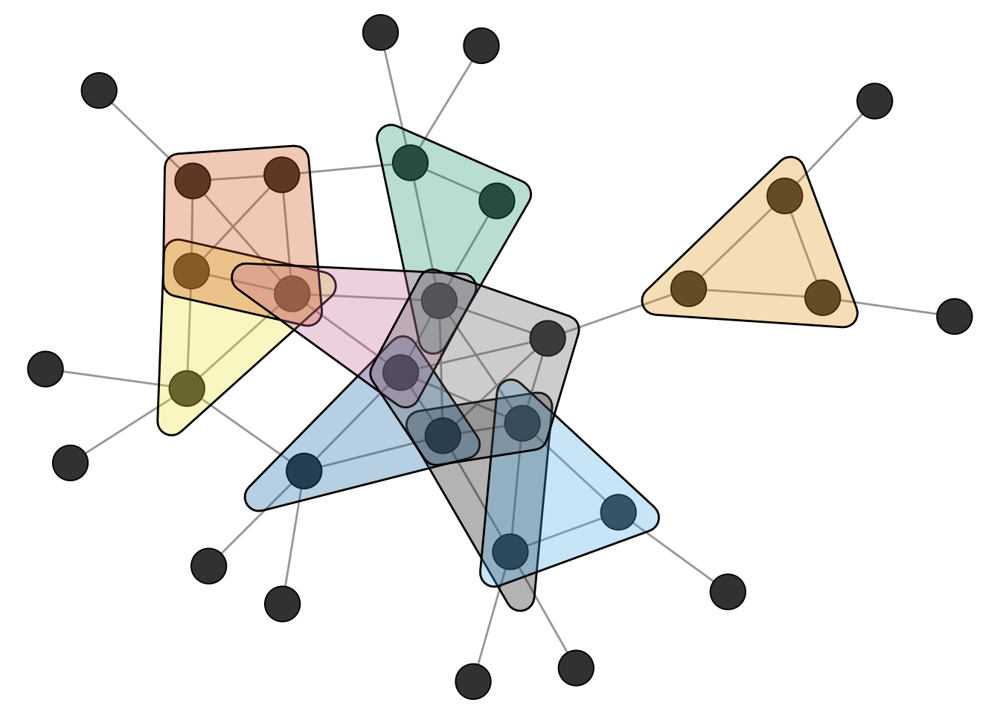
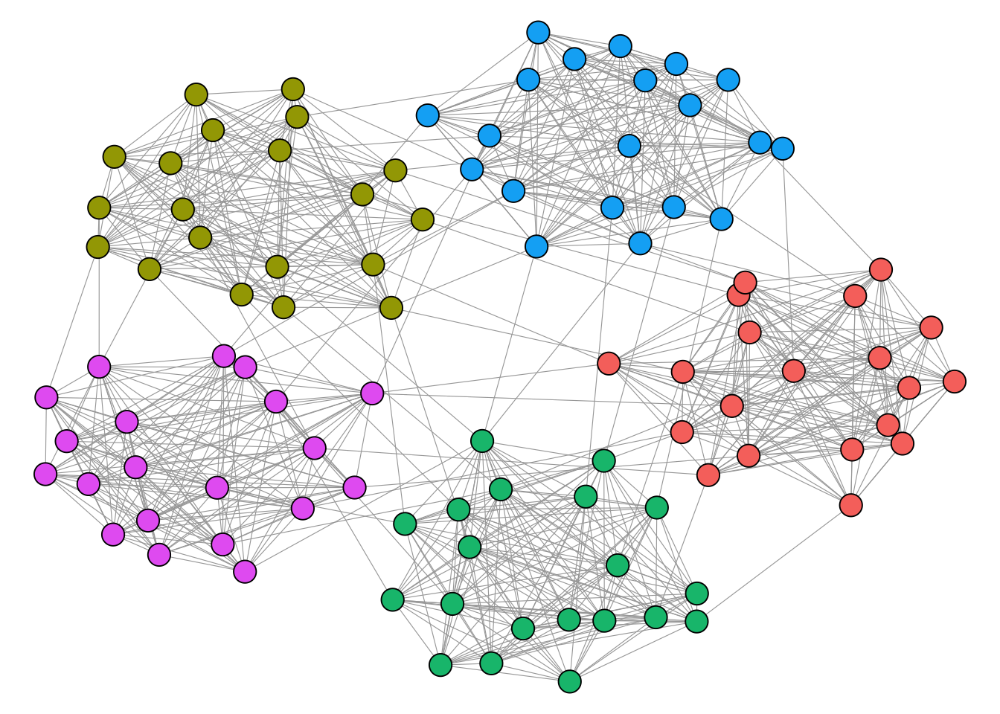
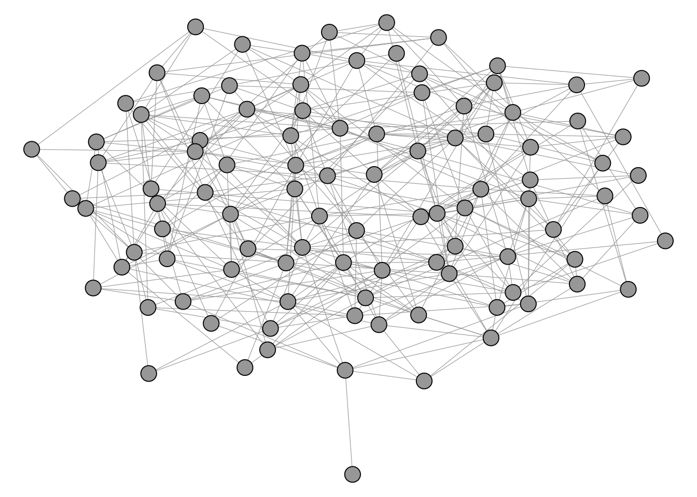
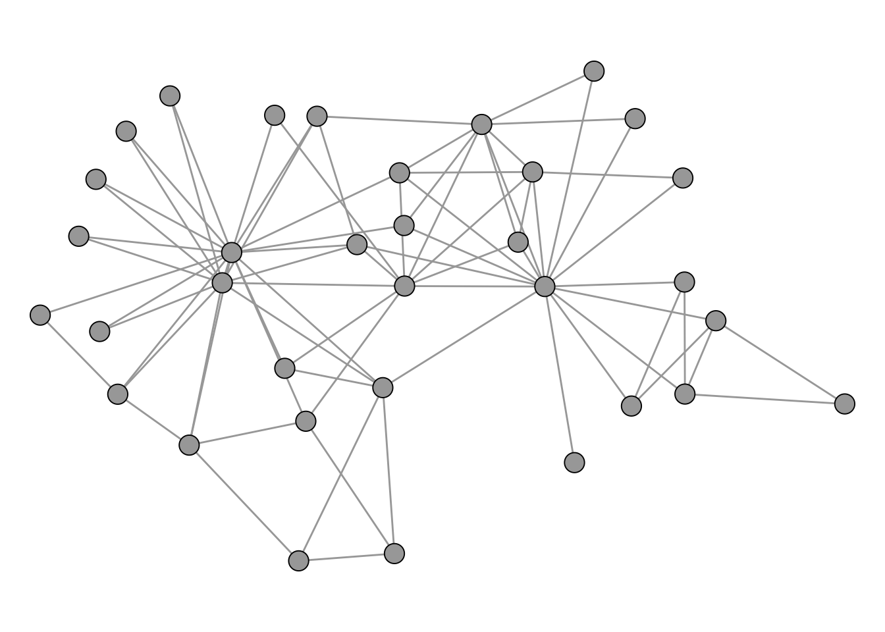
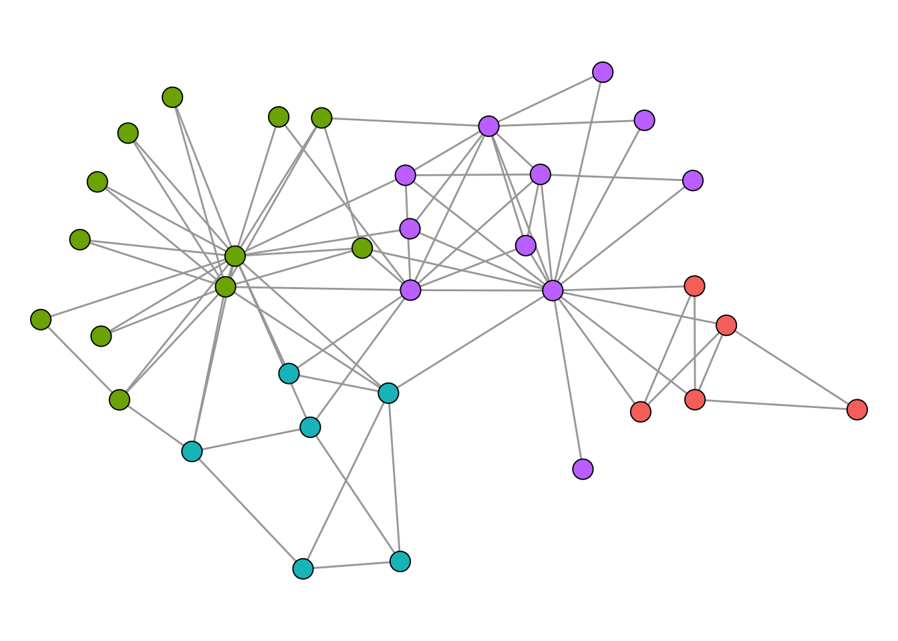
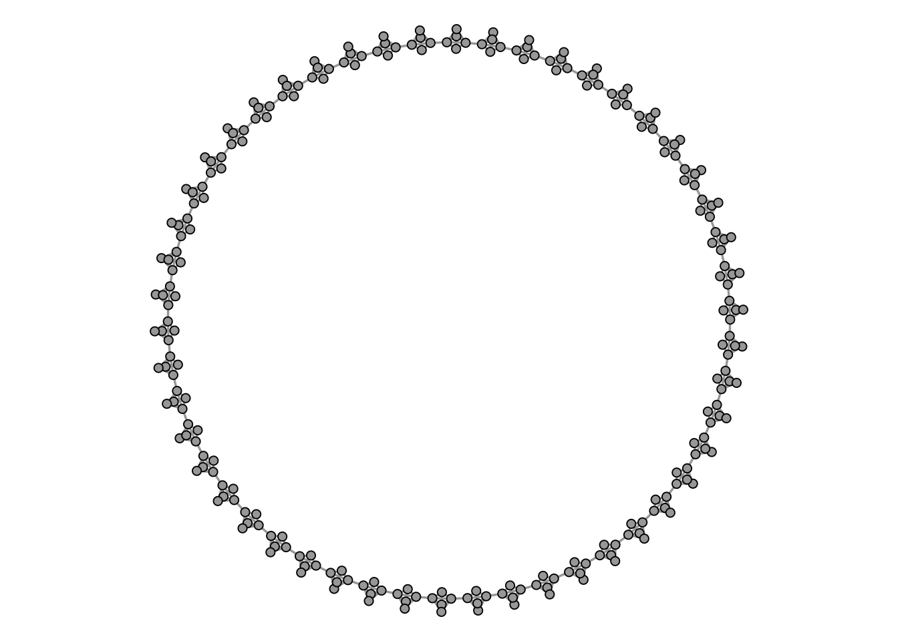

library(igraph)
Attaching package: 'igraph'The following objects are masked from 'package:stats':
decompose, spectrumThe following object is masked from 'package:base':
unionlibrary(networkdata)library(igraph)
Attaching package: 'igraph'The following objects are masked from 'package:stats':
decompose, spectrumThe following object is masked from 'package:base':
unionlibrary(networkdata)A clique in a network is a set of nodes that form a complete subnetwork within a network (called a complete subgraph). A maximal clique is a clique that cannot be extended to a bigger clique by addding more nodes to it.
data("clique_graph")All maximal cliques can be calculated with max_cliques() (only feasible for fairly small networks). The min parameter can be used to set a minimum size. Here, we want to ignore all cliques of size \(2\).
# only return cliques with three or more nodes
cl <- max_cliques(clique_graph, min = 3)
cl[[1]]
+ 3/30 vertices, from 0193e05:
[1] 9 17 18
[[2]]
+ 3/30 vertices, from 0193e05:
[1] 7 4 5
[[3]]
+ 3/30 vertices, from 0193e05:
[1] 7 4 8
[[4]]
+ 3/30 vertices, from 0193e05:
[1] 10 2 11
[[5]]
+ 3/30 vertices, from 0193e05:
[1] 16 12 15
[[6]]
+ 3/30 vertices, from 0193e05:
[1] 6 1 5
[[7]]
+ 4/30 vertices, from 0193e05:
[1] 12 13 15 14
[[8]]
+ 3/30 vertices, from 0193e05:
[1] 12 2 1
[[9]]
+ 5/30 vertices, from 0193e05:
[1] 1 2 5 4 3The figure below shows the network and the found maximal cliques.

Related to cliques is the k-core decomposition of a network. A k-core is a subgraph in which every node has at least k neighbors within the subgraph. A k-core is thus a relaxed version of a clique.
The function coreness() can be used to calculate the k-core membership for each node.
kcore <- coreness(clique_graph)
kcore [1] 4 4 4 4 4 3 2 2 2 2 2 3 3 3 3 3 2 2 1 1 1 1 1 1 1 1 1 1 1 1Cliques are the prototypical and most strict definition of a cohesive subgroup of a graph. In empirical networks, however, we rarely encounter situations where we can partition the whole network into a set of cliques. A relaxed version of this problem is that of clustering, also referred to as comunity detection.
A cluster is loosely defined as a group of nodes which are internally densely and externally sparsely connected. The network below shows an example for a network with a visible and intuitive cluster structure.
# labeL; clustered-graph
#| echo: FALSE
n1 <- 5
n2 <- 20
set.seed(1234)
g <- sample_islands(n1, n2, 0.9, 5)
g <- simplify(g)
V(g)$grp <- rep(LETTERS[1:n1], each = n2)
ggraph(g, "stress") +
geom_edge_link0(edge_linewidth =0.2, edge_color = "grey66") +
geom_node_point(shape = 21, size = 5, aes(fill = grp), show.legend = FALSE) +
theme_void()
In contrast, the network below does not really seem to have any well defined cluster structure.

The following algorithms for graph clustering are implemented in igraph.
[1] "cluster_edge_betweenness" "cluster_fast_greedy"
[3] "cluster_fluid_communities" "cluster_infomap"
[5] "cluster_label_prop" "cluster_leading_eigen"
[7] "cluster_leiden" "cluster_louvain"
[9] "cluster_optimal" "cluster_spinglass"
[11] "cluster_walktrap" Most of these algorithms are based on “modularity maximization”. Modularity is defined as the fraction of edges that fall within given groups minus the expected fraction if edges were distributed at random.
The workflow of a cluster analysis is always the same, independent from the chosen method. We illustrate the workflow using the infamous karate club network.
data("karate")
# compute clustering
clu <- cluster_louvain(karate)
# cluster membership vector
mem <- membership(clu)
mem [1] 1 1 1 1 2 2 2 1 3 1 2 1 1 1 3 3 2 1 3 1 3 1 3 4 4 4 3 4 4 3 3 4 3 3# clusters as list
com <- communities(clu)
com$`1`
[1] 1 2 3 4 8 10 12 13 14 18 20 22
$`2`
[1] 5 6 7 11 17
$`3`
[1] 9 15 16 19 21 23 27 30 31 33 34
$`4`
[1] 24 25 26 28 29 32To compare the quality of clusterings, we can compute the modularity score for each output.
imc <- cluster_infomap(karate)
lec <- cluster_leading_eigen(karate)
loc <- cluster_louvain(karate)
sgc <- cluster_spinglass(karate)
wtc <- cluster_walktrap(karate)
scores <- c(
infomap = modularity(karate, membership(imc)),
eigen = modularity(karate, membership(lec)),
louvain = modularity(karate, membership(loc)),
spinglass = modularity(karate, membership(sgc)),
walk = modularity(karate, membership(wtc))
)
scores infomap eigen louvain spinglass walk
0.402038 0.393409 0.419790 0.419790 0.353222 For the karate network, cluster_spinglass() produces the highest modularity score. The corresponding clustering is shown below.

Modularity maximization is still widely considered as the state-of-the-art clustering method for networks. There are, however, some technical shortcomings that one should be aware of. One of those is the so called “resolution limit”. When modularity is being maximized, it can happen that smaller clusters are merged together to form bigger clusters. The prime example is the graph that consists of cliques connected in a ring.
The figure below shows such a graph, consisting of 50 cliques of size 5.

Intuitively, any clustering method should return a cluster for each clique.
clu_louvain <- cluster_louvain(K50)
table(membership(clu_louvain))
1 2 3 4 5 6 7 8 9 10 11 12 13 14 15 16 17 18 19 20 21 22
15 10 10 10 10 15 15 10 10 15 10 10 10 15 10 10 10 10 15 10 10 10 A clustering algorithm that fixes this issue is the leiden algorithm.
clu_leiden <- cluster_leiden(K50, objective_function = "CPM", resolution_parameter = 0.5)
table(membership(clu_leiden))
1 2 3 4 5 6 7 8 9 10 11 12 13 14 15 16 17 18 19 20 21 22 23 24 25 26
5 5 5 5 5 5 5 5 5 5 5 5 5 5 5 5 5 5 5 5 5 5 5 5 5 5
27 28 29 30 31 32 33 34 35 36 37 38 39 40 41 42 43 44 45 46 47 48 49 50
5 5 5 5 5 5 5 5 5 5 5 5 5 5 5 5 5 5 5 5 5 5 5 5 The figure below shows the clusters computed with the louvain method in grey and the leiden method in red.
Warning: Using `size` aesthetic for lines was deprecated in ggplot2 3.4.0.
ℹ Please use `linewidth` instead.Don't know how to automatically pick scale for object of type <membership>.
Defaulting to continuous.
Don't know how to automatically pick scale for object of type <membership>.
Defaulting to continuous.
If you are interested in the technical details of the Leiden method, check out the original paper.
Blockmodeling is similar to
(Stochastic) Blockmodels, for instance, can also be used to find community structures. Several packages exist for this, such as randnet or blockmodels.